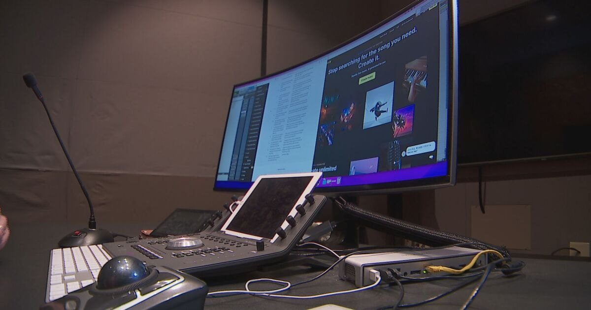

Projects
Things I've made
Longer write-ups of individual projects — what it was, how it was built, and what it taught me. The credits page is the full list; this is where the stories live.
-

Cost of Valor
AI-powered filmmaking · Belmont University · 2026Two AI-generated trailer reels bringing a Vietnam veteran's account of Operation Lam Son 719 to the screen — and an honest account of where the tools broke.
-

TEDxNashville video production
Producer and editor · TEDxNashville board memberThirty-four speakers produced and edited, three of them picked up by TED.com. Every published talk is embedded on the page.
-

GRAMMY Camp
Audio engineering faculty · GRAMMY Museum · 2009 to nowFifty-plus camps across Los Angeles, New York and Nashville, and the two online curricula I wrote for students who couldn't get to one.
-

M.A. in Media & Entertainment Industries
Graduate program · Belmont University · launched 2025A one-year hybrid master's degree built so working professionals don't have to quit their jobs to get one.